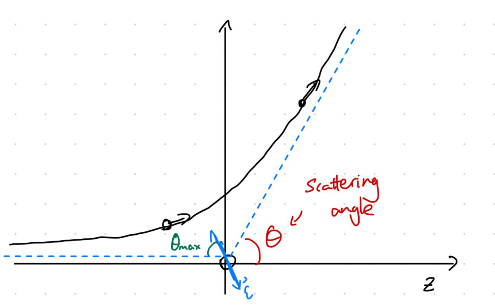

1 Two-body problem
Corrections:
- Lecture notes missing \vec on \(F_2\) before section 2.
- \(\dot {\vec r}\) mis-typed after eq 28 in “angular momentum”.
We start with this problem to:
- Warm up the physics brain if you haven’t solved a mechanicss problem in a while :)
- Present one of the few solvable physics problems (another being the harmonic oscillator).
- Exemplify how a problem can be solved by analyzing its symmetries and conserved quantities.
- Introduce the Runge-Lenz vector (hydrogen atom, Physics 143a), effective radial potential (Physics 143a, 210), and the basics of scattering (Physics 143b).
We approach the two-body problem in the following steps:
- Reduce to one-body motion.
- Identify the conserved quantities: energy \(E\),
angular-momentum \(\mathbf L\), and Runge-Lenz vector \(\boldsymbol\epsilon\).
- \(E\) is conserved when the potential \(V\) is time-invariant.
- \(\mathbf L\) is conserved when \(V\) is central.
- \(\boldsymbol\epsilon\) is conserved when \(V\propto r^{-2}\). Orbits of such potentials have conserved eccentricity.
- Reduce to planar motion using conservation of \(\mathbf L\).
- Derive the orbit equations from conserved quantities.
- Analyze the different kinds of orbits by looking at the one-dimensional effective potential \(V_{\mathrm{eff}}\).
- Analyze scattering.
Problem setup
Definition 1.1 (two-body problem) Consider two particles with mass \(m_1, m_2\) at locations \(\mathbf x_1, \mathbf x_2 \in \mathbb R^3\). Their potential is \[ V(\mathbf x_1, \mathbf x_2) = -\dfrac{k}{|\mathbf x_1-\mathbf x_2|} \] Here \(k\in \mathbb R\) is a constant. The interaction is attractive when \(k>0\) and repulsive when \(k<0\).
Computing the force based on the potential: \[ \mathbf F_j = -\nabla_{\mathbf x_j}V(\mathbf x_1, \mathbf x_2) = \dfrac{k}{|\mathbf x_1 - \mathbf x_2|^2} \nabla_{\mathbf x_j}|\mathbf x_1 - \mathbf x_2| = \dfrac{k}{|\mathbf x_1-\mathbf x_2|^2} \begin{cases} (\mathbf x_1 - \mathbf x_2) & j = 1 \\ (\mathbf x_2 - \mathbf x_1) & j = 2 \end{cases} \tag{1.1} \] Note that \(\mathbf F_1 + \mathbf F_2 = 0\). Recalling Newton’s second law, the equations of motion are \[ \ddot {\mathbf x}_j = \mathbf F_j / m_j \]
Instead of solving for \(\mathbf x_1, \mathbf x_2\), one can solve instead for the motion of the center of mass \(\mathbf R\) and displacement \(\mathbf r\). The motion of \(\mathbf R\) will be trivial.
Proposition 1.1 (center of mass motion) Define the center of mass \[ \mathbf R = \dfrac{m_1}{m_1+m_2} \mathbf x_1 + \dfrac{m_2}{m_1+m_2}\mathbf x_2 \] The equation for the center of mass is \[ (m_1+m_2)\ddot {\mathbf R} = m_1\ddot{\mathbf r}_1 + m_2\ddot{\mathbf r}_2 = \mathbf F_1 + \mathbf F_2 = 0 \] The motion of the center of mass is thus completely determined by the initial conditions of the problem.
Definition 1.2 (relative coordinates, displacement) Define the relative coordinates \(\mathbf r_j = \mathbf x_j - \mathbf R\) and displacement \(\mathbf r = \mathbf x_2 - \mathbf x_1\). Denote by \(r=|\mathbf r|, \mathbf n = \mathbf r / r\). Note that \(\mathbf n\) points in the direction \(1\to 2\).
Proposition 1.2 (one-body equation) The coordinates \(\mathbf r\) obeys \[ \ddot {\mathbf r} = \mathbf F/\mu, \quad \mathbf F = -\nabla_{\mathbf r} V(r) = -\dfrac{k}{r^3} \mathbf r \quad \mu = \dfrac{m_1m_2}{m_1+m_2} \] Here \(\mu\) is the reduced mass which satisfies \(1/m_1 + 1/m_2 = 1/\mu\). It is the “effective” mass of the one-body “particle” corresponding to the two-body problem. Additionally define the one-body momentum \[ \mathbf p = \mu \dot {\mathbf r}, \quad \dot {\mathbf p} = \mathbf F \]
Proof: Rewriting (1.1) in terms of the newly defined quantities: \[\begin{align} m_1 \ddot {\mathbf x}_1 &= \dfrac{k}{r^2}\mathbf n = -m_2 \ddot {\mathbf x}_2 \\ \ddot {\mathbf r} &= \ddot {\mathbf x}_2 - \ddot {\mathbf x}_1 = -\left(\dfrac 1 {m_2} + \dfrac 1 {m_1}\right)\dfrac{k}{r^2} \mathbf n = - \dfrac{k}{\mu r^2}\mathbf n \end{align}\]
Three conserved quantities
Definition 1.3 (conserved quantity (non-relativistic)) In Newtonian mechanics, a quantity is ‘’conserved’’ if it remains constant under time-evolution.
Proposition 1.3 (conservation of energy) The energy scalar \[ E = T + V = \dfrac{\mathbf p^2}{2\mu} + V \] is conserved by Newton’s equation of motion \(\mu \ddot {\mathbf r} = \mathbf F = -\nabla_{\mathbf r} V(r)\)
Proof: Direct computation \[ d_t E = d_t \left( \dfrac{\mu^2 \dot {\mathbf r} \cdot \dot {\mathbf r}}{2\mu} + V \right) = \mu \dot {\mathbf r}\cdot \ddot {\mathbf r} - (\nabla_{\mathbf r} V) \cdot \mathbf r = 0 \] Note that \(d_tV\) is computed according to the dependence \(V\leftarrow \mathbf r\leftarrow t\).
Proposition 1.4 (conservation of angular momentum) The angular momentum vector \[ \mathbf L = \mathbf r\times \mathbf p \] Is conserved for any central force problem: one in which \(V(\mathbf r)=V(r, \mathbf n) = V(r)\) is only dependent on the magnitude, but not direction, of \(r\).
Proof: Direct computation \[ d_t \mathbf L = d_t(\mathbf r\times \mathbf p) = \dot {\mathbf r}\times \mathbf p + \mathbf r \times \mathbf F = 0 + 0 \] The first term vanishes by \(\mathbf p \parallel \dot {\mathbf r}\) and the second by the definition of central potential.
Remark. This is our first example of symmetry-conservation. A central force problem demonstrates spherical symmetry. A rigorous definition of “symmetry” will be given soon.
Proposition 1.5 (planar reduction) The trajectory \(\mathbf r\) lie in the plane orthogonal to \(\mathbf L\). Given this, let \(\mathbf n =\mathbf r/r\) be the first unit component of the plane and the second \[ \mathbf l = (\mathbf L \times \mathbf r) / |\mathbf L\times \mathbf r| \] In polar coordinates, \[ \dot {\mathbf r} = \dot r \mathbf n + r\dot \theta \mathbf l \implies \mathbf L = \mu r^2 \dot \theta (\mathbf n\times \mathbf l) \]
Proof: \(\mathbf L = \mu \, \mathbf r \times \dot {\mathbf r}\) is orthogonal to both \(\mathbf r\) and \(\dot {\mathbf r}\), and \(\mathbf L\) is conserved.
Proposition 1.6 (conservation of the Runge-Lenz vector) The Runge-Lenz vector \(\boldsymbol\epsilon\) is defined as \[ \boldsymbol\epsilon = \dfrac 1 {\mu k} \mathbf p \times \mathbf L - \mathbf n = \dfrac 1 {\mu k} [\mathbf p \times (\mathbf r\times \mathbf p)] - \mathbf n = \dfrac 1 {\mu k} [\mathbf p \times (\mathbf r\times \mathbf p)] - \mathbf n = \dfrac{pL} {\mu k} \mathbf n - \mathbf n \] The vector is conserved.
Proof: Direct computation. \[\begin{align} \dot {\boldsymbol\epsilon} &= \dfrac 1 {\mu k} \mathbf F \times \mathbf L - \dot {\mathbf n} = \dfrac 1 {\mu k} \left(-\dfrac{k}{r^2} \mathbf n\right) \times [\mu r^2 \dot \theta (\mathbf n \times \mathbf l)] - \dot {\mathbf n} \\ &= -\dot \theta [\mathbf n\times (\mathbf n \times \mathbf l)] - \dot {\mathbf n} = \dot \theta \mathbf l - \dot {\mathbf n} = 0 \end{align}\]
Proposition 1.7 (magnitude of the Runge-Lenz vector) The magnitude \(\epsilon = |\boldsymbol\epsilon|\) is \[ \epsilon^2 = 1 + \dfrac{2EL^2}{\mu k^2} \] Proof: First compute \(\mathbf p\times \mathbf L = \mathbf p \times (\mathbf r \times \mathbf p) = Lp\mathbf n\). Then \(\mathbf n \cdot (\mathbf p\times \mathbf L) = Lp\) and \(|\mathbf p\times \mathbf L|^2 = p^2L^2\) since \(\mathbf p \perp \mathbf L\). Also note that \(p/L = 1/r\), then then \[\begin{align} \epsilon^2 &= \mathbf n\cdot \mathbf n + \dfrac{1}{\mu^2 k^2} [(\mathbf p\times \mathbf L)\cdot (\mathbf p\times \mathbf L)] - \dfrac{2}{\mu k} \mathbf n \cdot (\mathbf p\times \mathbf L) \\ &= 1 + \dfrac{p^2 L^2}{\mu^2k^2} - 2 \dfrac{pL}{\mu k} = 1 + \dfrac{2L^2}{\mu k^2}\left(\dfrac{p^2}{2\mu} - \dfrac{pk}{L}\right) = 1 + \dfrac{2EL^2}{\mu k^2} \end{align}\]
Orbits, effective potential
We can obtain an implicit equation of motion using the conservation equations. By definition of \(\boldsymbol\epsilon\) 1.6 \[ \mathbf r\cdot \boldsymbol\epsilon = \dfrac{rpL}{\mu k} - r = \dfrac{L^2}{\mu k} - r \] Let \(\mathbf r\cdot \boldsymbol\epsilon = r\epsilon \cos\theta\), then the orbit equation reads \[ r(1+\cos\theta) = \dfrac{L^2}{\mu k} \tag{1.2} \]
Remark. Here the orientation is such that \(\theta=0\) points along \(\boldsymbol\epsilon\). This is also an implicit orbit equation since time is not an explicit variable.
The lecture note appendix works out the conic section trajectories corresponding to different ranges of \(\epsilon\).
Definition 1.4 (effective radial potential) So far, the kinetic energy is computed according to the vector derivative \(\dot {\mathbf r}\) \[ E = T + V = \dfrac 1 2 \mu \dot {\mathbf r}^2 - \dfrac{k}{r} \] In our case, we can reduce this to a scalar problem by introducing the effective potential. Recall \(\dot {\mathbf r} = \dot (r\mathbf n) = \dot r\mathbf n + r\dot {\mathbf n} = \dot r\mathbf n + r\dot \theta \mathbf l \implies \dot {\mathbf r}^2 = \dot r^2 + r^2\dot \theta^2 = \dot r^2 + L^2/\mu^2 r^2\) \[ E = \dfrac 1 2 \mu \dot{\mathbf r}^2 - \dfrac k r = \dfrac 1 2 \mu \dot r^2 + \left(\dfrac{L^2}{2\mu r^2} - \dfrac k r \right) \] The last term in paranthesis is called the “effective potential \(V_{\mathrm{eff}}\).
Remark. Recall that \(L\) is conserved when the potential displays spherical symmetry. The effective potential conveniently reduces a vector problem into a scalar problem at the cost of introducing a “centrifugal” term. This is a prime example of symmetry helping simplify analysis. The effective potential reduction will show up again in the QM treatment of the hydrogen atom (Physics 143a) and spherical gravity correction (Physics 210).
Energy is conserved along orbits, and we can easily identify the bound, unbound, and spherical orbits from the effective-potential graph.
Exercise 1.1 (relativistic gravitational effective-potential) Identify the effective potential for Newtonian gravity, where \(k=GM\). What is the radius of the circular orbit?
The effective radial potential from a spherical mass according to general relativity is \[ V_{\mathrm{eff}} = -\sigma \dfrac{GM}{r} + \dfrac{L^2}{2r^2} - \dfrac{GML^2}{r^3} \] Where \(\sigma=0\) if the particle is massless else \(1\). What are the behaviors for massive and massless particles?
Scattering
In scattering problems, we assume a spatially and temporally uniform distribution of incoming beams of particles along the incident \(z\)-axis. We use cylindrical coordinates \((z, b, \phi)\) denoting height, radius, and the azimuthal angle, respectively. The main quantities are:
- Impact parameter \(b\), scattering angle \(\theta\).
- Particles are incident within an infinitesimal patch with cross-sectional area \(d\sigma(b, \phi) = b\, db\, d\phi\).
- Particle emission are considered according to a solid angle \(d\Omega(\theta, \phi) = \sin\theta \, d\theta\, d\varphi\).
- The differential cross-section \(d_\Omega\sigma \equiv \dfrac{b}{\sin\theta}|d_\theta b|\). Usually, the greater \(\theta\) (heavier scattering effect), the smaller \(b\), since incident particles shoot closer to the scattering source – thus the absolute sign.
- The total cross-section \(\sigma = \int (d_\Omega \sigma)\, d\Omega\). This is the total cross-sectional area which encounters scattering. For classical hard-sphere scattering, this is \(\pi R^2\).

Remark. When the scattering source is spherically symmetric, all dependences on \(\phi\) can be dropped.
The differential cross-section \(d_\Omega \sigma\) asks: at angle \(\theta\) from scattering center, what is the impact parameter \(b\) and how much unit increase in output solid angle will be able to account for unit area increase in the incident beams?
To compute the two-body scattering differential cross-section, the first step is deriving the relation between the impact parameter \(b\) and scattering angle \(\theta\).
Proposition 1.8 (scattering relation) \(b(\theta) = \dfrac{|k|}{2E} \cot(\theta/2)\)
Proof: Recall the orbit equation (1.2): denote the planar angle \(\phi\), let \(D = \dfrac{L^2}{\mu k}\), and expand in terms of \(x, y\) \[ r(1 + \epsilon \cos\phi) = r + \epsilon x = D \] Expanding in terms of \(x, y\) \[\begin{align} r^2 &= x^2 + y^2 = (D - \epsilon x)^2 \\ y^2 &= (\epsilon^2 - 1)x^2 - 2D\epsilon x + D^2 \end{align}\] For repulsive orbits, \(\epsilon>1\) and the orbits asymptote to \[ y \sim \pm \sqrt{\epsilon^2 - 1} x, \quad |x|\to \infty \] The scattering angle \(\theta\) in the scattering diagram thus satisfy \[\begin{align} \tan\theta_{\mathrm{max}} = \sqrt{\epsilon^2 - 1}, \quad \tan(\theta/2) = \tan(\pi/2 - \theta_{\mathrm{max}}) = \cot(\theta_{\mathrm{max}}) \end{align}\]  The angular momentum \(L\) of the incoming particle can be computed at the incident limit: \[\begin{align} L &= |\mathbf r\times \mathbf p| = b p = b\sqrt{2\mu E} \\ \cot(\theta/2) &= \tan(\theta_{\mathrm{max}}) = \sqrt{\dfrac{2EL^2}{\mu k^2}} = \dfrac{2bE}{|k|} \end{align}\]
Theorem 1.1 (Rutherford cross-section formula) For repulsive two-body scattering, the cross-section is dependent upon \(\theta\) as \[ (d_\Omega \sigma)(\theta) = \left(\dfrac{k}{4E}\right)^2 \sin^{-4}\dfrac{\theta}{2} \]
Proof: The first step is elucidating the dependence \(d_\Omega \sigma \leftarrow b,\, d_\theta b \leftarrow \theta\). From 1.8 we have \[\begin{align} b(\theta) &= \dfrac{|k|}{2E}\cot(\theta/2) \\ d_\theta b &= -\dfrac{|k|}{4E} \mathrm{csc}^2(\theta/2) \end{align}\] Substituting into the relation \(d_\Omega \sigma = b|d_\theta b|/\sin\theta\) yields formula as claimed.